Data Science for Electron Microscopy
Week 5: From images to features: descriptors & tree ensembles
FAU Erlangen-Nürnberg
Institute of Micro- and Nanostructure Research


Three numbers you will understand today
Week 4: a model, a loss, an honest split. Today: where the table comes from, and the model that is the default for tables. One real data set all the way.
1 934 × 11
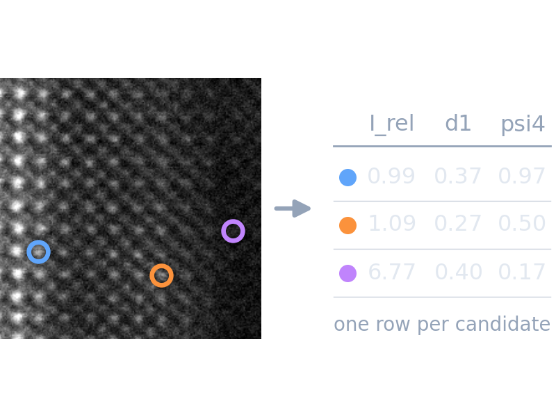
four images become one table: 1 934 objects, 11 descriptors each
→ Acts 1 + 2 · Objects, Descriptors
94 → 69 %
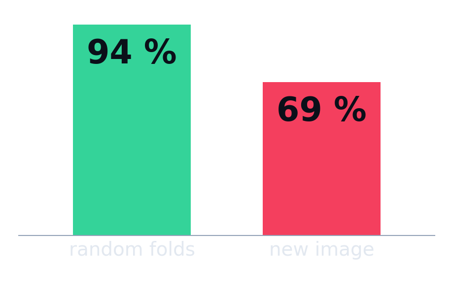
accuracy of the same random forest: random folds versus a new image
→ Act 5 · Validate
84 %
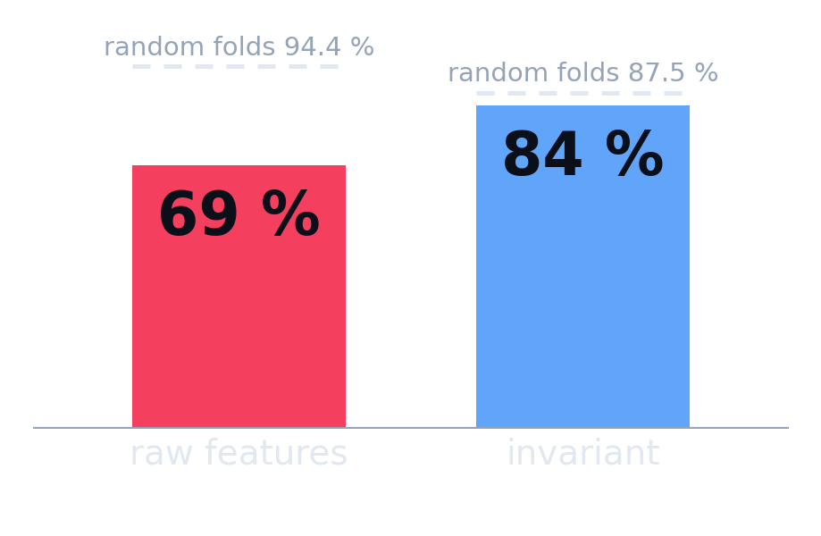
on a new image with six descriptors that do not know the image
→ Acts 2 + 6 · Descriptors, Explain
Today’s red line: from an image to a classifier you can explain
One specimen, four images, one question
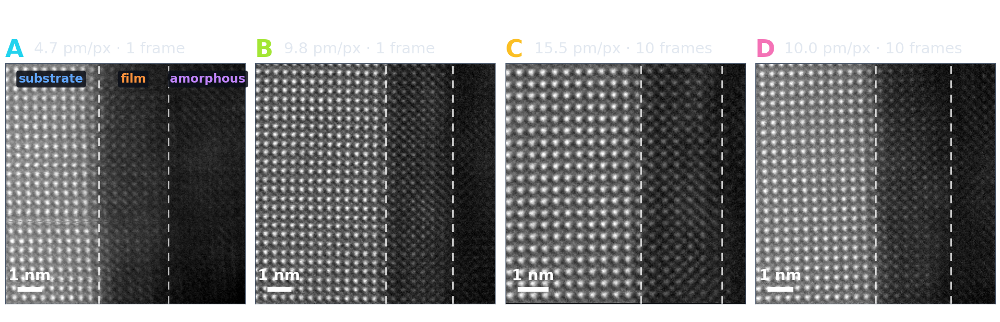
Four HAADF-STEM images of one cross-section: an oxide film on a LaAlO₃ substrate, with an amorphous layer on top. Different sessions, magnifications and doses.
The question for every intensity maximum: is it a substrate column, a film column, or no column at all?
Act 1 · Objects
Where are the objects in the image?
From an image to objects: smooth, find maxima, fit
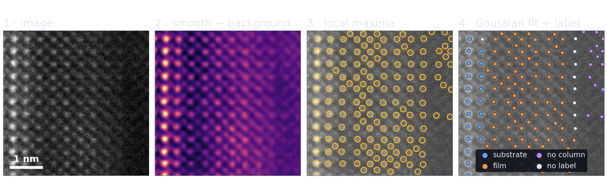
Image B, a strip across the interface. From left to right: the raw image; smoothed, with the slow background removed; the local maxima; the fitted positions, coloured by the label.
Three steps, three hyperparameters: the smoothing width, the minimum distance, the threshold. Each of them changes the table.
Find the columns: dose, smoothing, threshold
Refine each maximum: a 2-D Gaussian fit
1 Model of one column: \(I(\mathbf r)=A\,\exp\!\big(-\lvert\mathbf r-\mathbf r_0\rvert^2/2\sigma^2\big)+b\) in a small window around the maximum.
2 Least squares: \(\min_{A,\mathbf r_0,\sigma,b}\sum_{\text{pixels}}\big(I_\text{obs}-I(\mathbf r)\big)^2\). Non-linear in \(\mathbf r_0\) and \(\sigma\): Gauss–Newton, Week 4.
3 Output for each column: position \(\mathbf r_0\), peak height \(A\), width \(\sigma\), background \(b\), residual. The first descriptors.
4 Precision: \(\sigma_{r_0}\approx\sigma/\sqrt{N}\) for \(N\) detected electrons in the column. The pixel size does not appear.
The dose sets the precision, not the pixel size
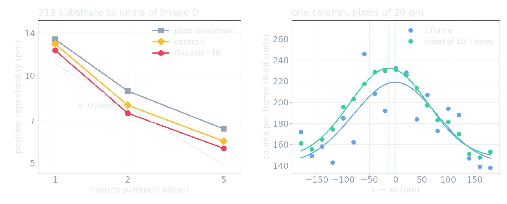
Left: the repeatability of a column position, measured on 219 substrate columns from two independent sums of image D. Right: a cut through one column, for one frame and for the mean of ten frames (shown with 2 × 2 binning, 20 pm), with the Gaussian fits.
Pixel size 10 pm. Precision with one frame: 12 pm. With five frames: 5.6 pm. Factor \(\sqrt5\): the precision follows \(1/\sqrt{\text{dose}}\).
The same idea for particles: segment, then measure
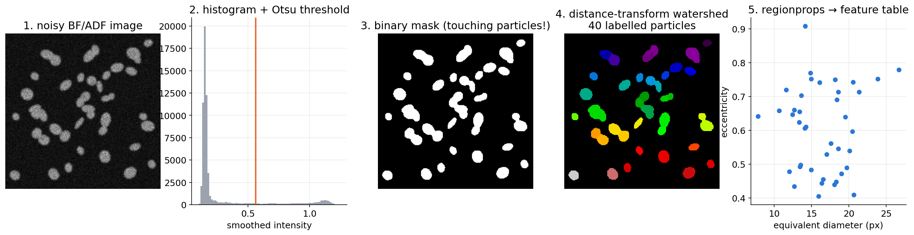
A synthetic particle image processed with scikit-image: smooth, Otsu threshold, binary mask, watershed to split touching particles, and one table row per particle (regionprops).
| Object | Detector | Hyperparameters | Typical descriptors |
|---|---|---|---|
| atom column | smooth → maxima → Gaussian fit | smoothing width, minimum distance, threshold | position, height, width, neighbours |
| particle, grain, pore | smooth → threshold → watershed | smoothing width, threshold rule, marker distance | area, equivalent diameter, eccentricity, solidity |
Checkpoint: the detector
Two minutes, in pairs. Say what changes in the table.
- You double the smoothing width. → Fewer false maxima, but close columns merge. Rows disappear, and the fitted widths grow.
- You want 3 pm precision; one frame gives 12 pm. → 16 times the dose (\(1/\sqrt N\)), for example 16 aligned frames. A smaller pixel does not help.
- The specimen is beam-sensitive: 5 electrons per pixel. → Poisson likelihood in the fit, not least squares (Week 2).
- The watershed merges two particles. → Area, eccentricity and solidity are wrong together: correlated errors in one row.
- A colleague reports “412 columns found”. What do you ask? → Threshold, minimum distance, smoothing, and the number of false detections on a region without columns.
Act 2 · Descriptors
Which numbers describe one object?
One row per object: the feature table
| Descriptor | Meaning | Unit | Kind |
|---|---|---|---|
amp, bg |
peak height and background of the fit | counts | raw intensity |
sigma |
width of the fit | nm | shape |
resid |
RMS residual of the fit / peak height | – | shape |
contrast |
peak height / background | – | ratio |
I_rel |
peak height / median peak height of the 4 nearest | – | ratio |
d1, d4 |
distance to the nearest; mean distance to the 4 nearest | nm | geometry |
d_spread |
std / mean of the 4 distances | – | geometry |
n_near |
number of candidates within 0.45 nm | – | geometry |
psi4 |
four-fold order \(\big\lvert\tfrac14\sum_{j=1}^{4}e^{4i\theta_j}\big\rvert\) of the 4 nearest | – | geometry |
1 934 rows × 11 columns. From here on the image is gone: the model sees only this table.
Describe one column
Raw intensities identify the image
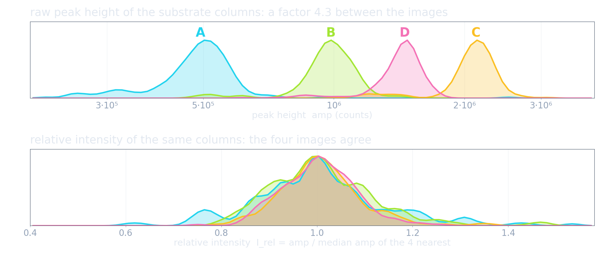
Top: the peak height amp of the substrate columns, for each of the four images. Bottom: the relative intensity I_rel of the same columns.
The median peak height differs by a factor of 4.3 between the images. A model that splits on amp learns which image, not which column.
Build the invariances into the descriptor
| The acquisition changes … | The descriptor must be … | How to get it |
|---|---|---|
| the field of view (shift) | translation invariant | use distances to neighbours, not positions |
| the scan direction (rotation) | rotation invariant | use distances and angles between neighbours |
| the order of the neighbours | permutation invariant | sum or average over the neighbours |
| gain, offset, dwell time | intensity invariant | use ratios to the local neighbours |
| the pixel size | scale aware | measure in nm, not in pixels |
And two more: continuous (a small shift of an atom gives a small change) and sensitive (different physics gives different numbers).
Order and distance separate lattice from noise
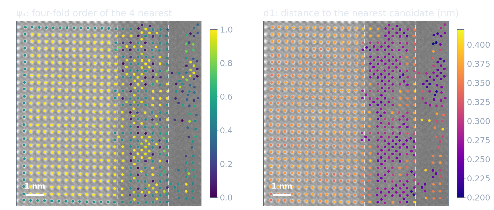
Image B. Left: each candidate coloured by the four-fold order psi4. Right: coloured by the distance to the nearest neighbour, d1.
From hand-made to systematic: symmetry functions
Radial symmetry functions (ACSF, \(G^2\)) Behler, Jörg et al., (2007), doi:10.1103/PhysRevLett.98.146401
\[G_i(r_s)=\sum_{j\ne i} e^{-(r_{ij}-r_s)^2/2w^2}\,f_c(r_{ij})\]
- one number for each shell radius \(r_s\): “how many neighbours at this distance?”
- a sum over neighbours: translation, rotation and permutation invariant
- a smooth cutoff \(f_c\): continuous
- angular functions and SOAP Bartók, Albert P. et al., (2013), doi:10.1103/PhysRevB.87.184115 add angles; library: DScribe Himanen, Lauri et al., (2020), doi:10.1016/j.cpc.2019.106949
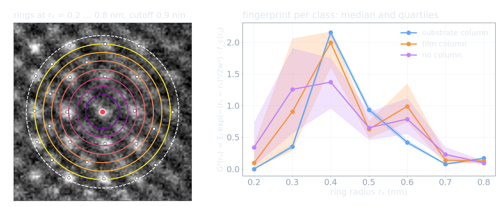
Checkpoint: is this a good descriptor?
Two minutes, in pairs. Which invariance does it break, and how do you repair it?
- The x coordinate of the column in pixels. → Not translation invariant. Use distances to neighbours.
- The angle of the nearest neighbour against the scan direction. → Not rotation invariant. Use the angle between two neighbours.
- The peak height in detector counts. → Not gain invariant. Divide by the local median, or calibrate the detector.
- The distance to the nearest neighbour in pixels. → Depends on the magnification. Convert to nm.
- The intensities of neighbours 1, 2, 3, 4 as four features. → Not permutation invariant. Sort them, or use mean and spread.
- The number of the image. → Invariant under everything in the image, and a pure leak. Remove it.
Act 3 · Tree
How does a tree ask questions?
A decision tree is a sequence of yes/no questions
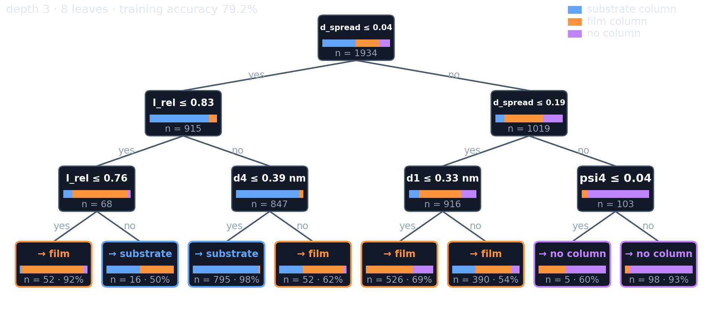
A tree of depth 3 on the six invariant descriptors, trained on all 1 934 labelled candidates. Each node shows the question, the number of rows and the class counts.
Which question? The one that makes the children purer
1 Impurity of a node with class fractions \(p_k\): Gini \(I=1-\sum_k p_k^2\), entropy \(I=-\sum_k p_k\log_2 p_k\).
2 A split (feature \(j\), threshold \(t\)) sends \(N_L\) rows left and \(N_R\) rows right.
3 Impurity decrease: \(\Delta = I(\text{parent})-\frac{N_L}{N}I(L)-\frac{N_R}{N}I(R)\)
4 Choose the pair \((j,t)\) with the largest \(\Delta\). Regression: \(I\) = variance of \(y\) in the node.
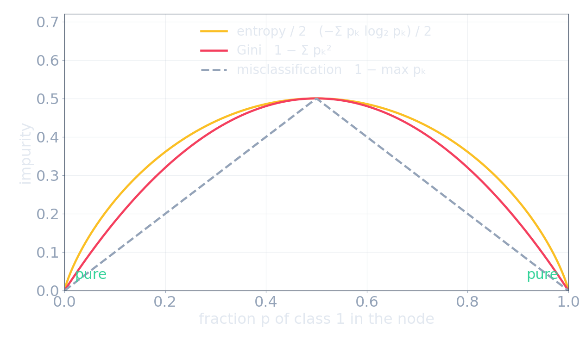
Two classes: the impurity against the fraction \(p\) of one class.
Find the best split of one node
CART: greedy, recursive, cheap
The algorithm
- Start with all rows in one node.
- Find the split \((j,t)\) with the largest \(\Delta\).
- Split the rows. Repeat steps 2 and 3 in each child.
- Stop: node is pure, depth limit, or fewer than
min_samples_leafrows. - Each leaf predicts its majority class (or its mean).
What follows from it
- Greedy: the best split now, not the best tree. The best tree is NP-hard to find.
- No scaling needed: only the order of the values matters.
- Thresholds and interactions are natural; smooth linear trends need many steps.
- No extrapolation: constant outside the training range.
- Unstable: a small change of the data can change the root, and then everything below it.
Grow a tree: depth against a new image
Depth: the training score always rises
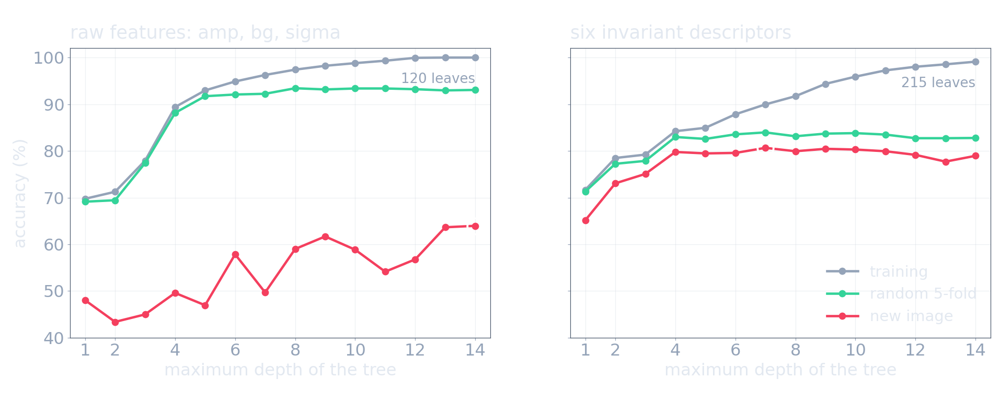
Accuracy against the depth of one tree. Left: three raw features (amp, bg, sigma). Right: six invariant descriptors. Training rows, random 5-fold, and a new image.
Raw features, full tree: 100 % training, 93 % random folds, 64 % new image. The random folds do not show the overfitting.
One tree is unstable
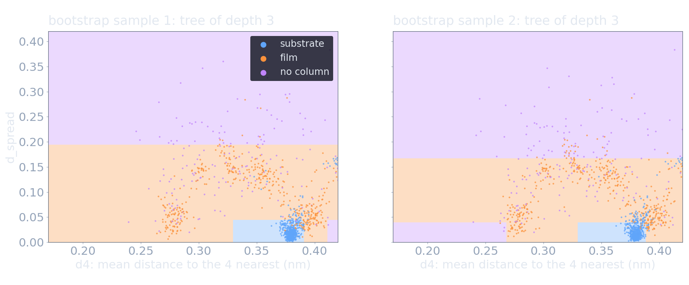
Two trees of depth 3 on two descriptors, trained on two bootstrap samples of the same rows. The shading shows the predicted class.
Same data, same algorithm, a different tree. High variance is the weakness of one tree, and the opportunity for many.
Checkpoint: trees
Two minutes, in pairs.
- A node has 40 substrate and 40 film columns. A split gives (40, 10) and (0, 30). Compute \(\Delta\) with Gini. → parent 0.50; children 0.32 and 0; \(\Delta = 0.50-\tfrac{50}{80}\cdot0.32 = \mathbf{0.30}\)
- You replace
d1by \(\log\)d1. What changes in the tree? → Nothing but the threshold values. Only the order matters. - The training accuracy is 100 %, the accuracy on a new image is 64 %. Two things to do. → Limit the depth (or
min_samples_leaf), and check the features for image identity. - A regression tree is trained on thicknesses of 10 to 50 nm. What does it predict for 80 nm? → About 50 nm: the value of the last leaf. No extrapolation.
- Two colleagues train a tree on the same data, with 5 % different rows. The roots differ. Who is wrong? → Nobody. Trees are unstable. Average many.
Act 4 · Ensemble
Why are many trees better than one?
Bagging: average many unstable trees
1 Bootstrap: draw \(N\) rows with replacement, \(B\) times. Train one deep tree on each sample.
2 Aggregate: average the \(B\) predictions (regression) or take the majority vote (classification).
3 Independent trees, each with variance \(\sigma^2\): \(\;\mathrm{Var}\big(\tfrac1B\sum_b f_b\big)=\sigma^2/B\). The bias does not change.
4 Correlated trees, pairwise correlation \(\rho\): \(\;\mathrm{Var}=\rho\,\sigma^2+\dfrac{1-\rho}{B}\,\sigma^2\;\xrightarrow{B\to\infty}\;\rho\,\sigma^2\)
More trees remove the second term only. The floor \(\rho\sigma^2\) stays: to go lower, make the trees less alike.
Count the votes on a new image
Random forest: decorrelate the trees
Random forest Breiman, Leo, (2001) = bagging + one more random choice:
- at each split, test only a random subset of the features (
max_features, default \(\sqrt F\) for classification) - a strong feature cannot be the root of every tree: \(\rho\) falls
- each tree is a little worse; the average is better
- out-of-bag score: each tree tests the 37 % of rows it did not see
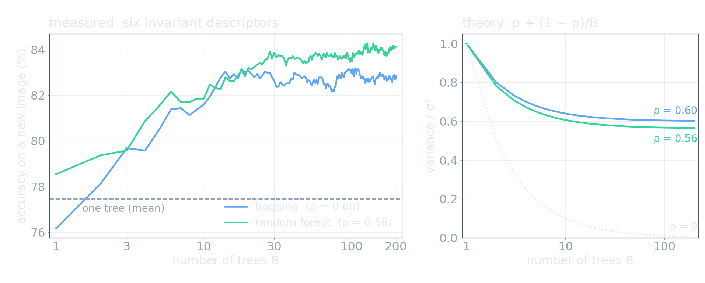
Boosting: each small tree corrects the last error
1 Start with a constant: \(F_0(\mathbf x)=\bar y\). Loss \(\mathcal L=\sum_i \ell\big(y_i,F(\mathbf x_i)\big)\).
2 Pseudo-residuals: \(r_i=-\,\partial \ell/\partial F(\mathbf x_i)\). For the squared error: \(r_i=y_i-F(\mathbf x_i)\), the residual.
3 Fit a small tree \(h_m\) to the \(r_i\) (depth 1 to 6).
4 Update: \(F_m=F_{m-1}+\eta\,h_m\). Repeat steps 2 to 4.
Gradient descent of Week 4, \(\mathbf w\leftarrow\mathbf w-\eta\nabla\mathcal L\), but in function space: each tree is one gradient step.
Watch boosting fit the residuals
Learning rate and early stopping
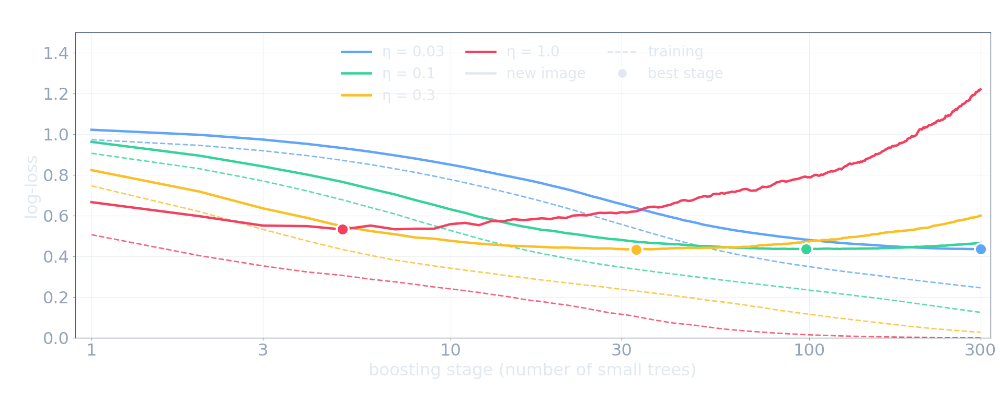
Boosting with trees of depth 2 on the six invariant descriptors. Log-loss on a new image (solid) and on the training images (dashed) against the number of trees, for four learning rates.
η = 1: best at 5 trees, then worse than the start. η = 0.1: best at 98 trees. The training loss goes to zero in all cases.
Bagging or boosting?
| Random forest (bagging) | Gradient boosting | |
|---|---|---|
| Trees | deep, low bias, high variance | small, high bias, low variance |
| Training | parallel, independent | in sequence, each on the last error |
| Lowers | the variance | the bias |
| More trees | never hurt | overfit: use early stopping |
| Main hyperparameters | max_features, min_samples_leaf |
\(\eta\), number of trees, tree size |
| Tuning effort | small | larger; tune inside grouped CV |
| On our task, new image | 84 % | 82 % |
Tree ensembles are the default first model for a table: mixed units, thresholds, useless columns. The default is a hypothesis: Act 5 tests it.
Checkpoint: ensembles
Two minutes, in pairs.
- One tree has variance \(\sigma^2\); the trees correlate with \(\rho=0.5\). The variance of 100 trees? Of infinitely many? → \(0.5\sigma^2+0.005\sigma^2\approx\mathbf{0.505\,\sigma^2}\); floor \(\mathbf{0.5\,\sigma^2}\)
- Your forest has 100 trees. A colleague says: “Use 10 000, it will be much better.” → No. The term \((1-\rho)\sigma^2/B\) is already small. Lower \(\rho\) or improve the descriptors.
- Boosting: training loss 0.001, loss on new images rising. What do you change? → Early stopping, a smaller η, smaller trees.
- Why does a random forest use deep trees, and boosting small trees? → Averaging lowers variance, not bias: it needs low-bias trees. Boosting lowers bias: it starts from low-variance trees.
- The out-of-bag score of your forest is 93 %. Can you report it for a new image? → No. Out-of-bag rows come from the training images.
Act 5 · Validate
Does it work on a new image?
Two splits, two answers
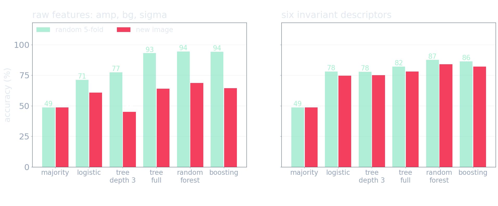
Six models, two feature sets, two splits. Light bars: random 5-fold over the candidates. Red bars: leave one image out.
Raw features: 94 % on random folds, 69 % on a new image. Invariant descriptors: 87 % and 84 %. The gap measures the leak.
See where the errors are
Which class fails? The confusion matrix
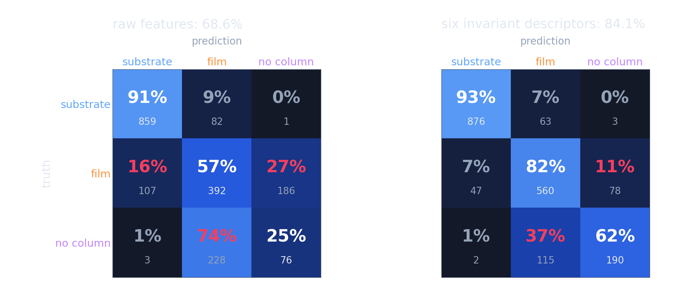
Random forest, leave-one-image-out, all four images. Rows: truth. Columns: prediction. Large numbers: share of the row (recall on the diagonal).
The baseline ladder decides
| New image, accuracy | all 11 | invariant 6 | ACSF 8 |
|---|---|---|---|
| majority class | 49 % | 49 % | 49 % |
| logistic regression | 80 % | 75 % | 82 % |
| tree, depth 3 | 57 % | 75 % | 74 % |
| random forest | 74 % | 84 % | 84 % |
| boosting | 67 % | 82 % | 84 % |
The rules
- Start with the majority class and a linear model.
- Use the same grouped folds for every model.
- A complex model must beat the baseline by more than the spread between the folds.
- If it does not: improve the descriptors, not the model.
With all 11 features, logistic regression beats the random forest by 6 points. Image A alone: forest 49 %, logistic 63 %.
Checkpoint: validation
Two minutes, in pairs. What is the group?
- 5 000 nanoparticles from 12 TEM images of 3 specimens. Claim: “works for a new specimen”. → Group by specimen: 3 groups, leave one out.
- Your features include the mean background of the image. Random-split accuracy: 97 %. → The background identifies the image. Group by image, and remove or normalise the feature.
- Random forest 84 %, logistic regression 82 %, four folds between 75 % and 90 %. Which do you report? → Both. The difference is inside the fold spread; prefer the simpler model.
- Accuracy 90 % with classes of 900, 80 and 20 objects. Good? → Unknown. “Always the majority” gives 90 %. Report recall per class.
- You tune
max_depthon the same folds that give your final score. → Optimistic. Tune inside the training folds (nested CV), or keep one image out of everything.
Act 6 · Explain
Which descriptors does the model use?
Two importances: impurity and permutation
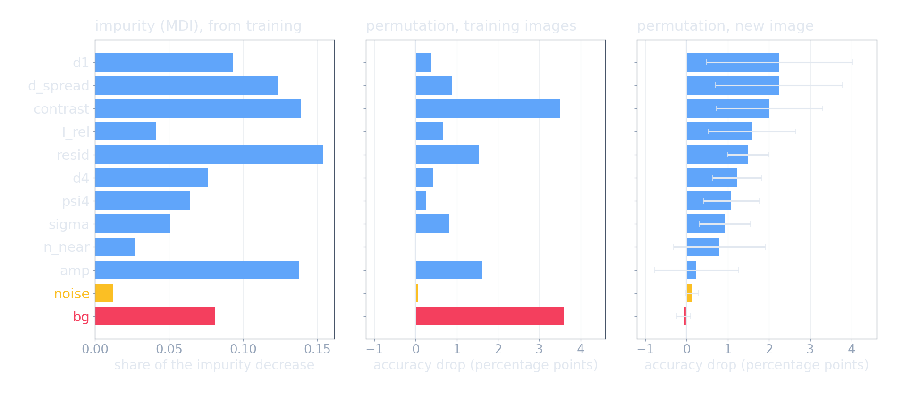
Random forest on all 11 features plus one column of pure random numbers (“noise”). Left: impurity importance. Middle: permutation importance on the training images. Right: permutation importance on a new image (bars: mean of four images; lines: spread).
Correlated descriptors hide each other
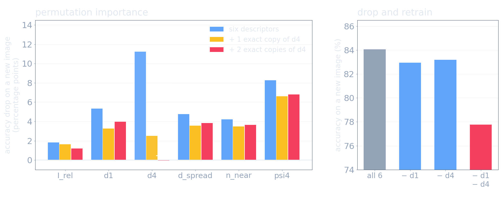
Left: permutation importance on a new image for the six invariant descriptors, and again after adding one or two exact copies of d4 to the table. Right: accuracy when the feature is removed and the model is trained again.
d4 falls from 11 points to 2.5 to 0 when copies exist. Remove d1 or d4: −1 point. Remove both: −6 points.
SHAP: divide one prediction among the descriptors
1 One prediction, one sum: \(f(\mathbf x)=\phi_0+\sum_j\phi_j\)
2 \(\phi_0\) = the mean prediction over the background data.
3 \(\phi_j\) = the mean change of the prediction when feature \(j\) joins, averaged over all orders of the features (Shapley value).
4 TreeSHAP: exact for trees in polynomial time. No sampling.
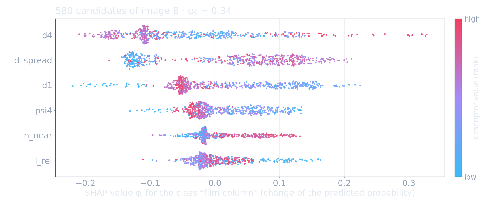
Each point: one candidate of image B. Colour: the value of the descriptor.
Click a column: why this prediction?
Explanation is not causation
What SHAP and importance tell you
- which inputs this model uses
- how one prediction divides among the inputs
- where the model uses a nuisance (
bg,amp): a leak detector - where the labels and the model disagree
What they do not tell you
- what causes the property in the specimen
- what happens if you change a descriptor in the experiment
- anything stable under correlated features: the credit is divided
- anything independent of the background data that defines \(\phi_0\)
A model can be right for the wrong reason. Only an experiment or a physical model tests a cause.
Checkpoint: explanations
Two minutes, in pairs. True or false, and why?
- “The noise column has an impurity importance of 1 %, so it carries a little information.” → False. MDI is biased; on held-out data it is zero.
- “
bghas the highest permutation importance on the training images, so I must keep it.” → False. On a new image it is zero: it identifies the image. - “
d1has a low permutation importance, so I can delete it.” → Not safe.d4holds the same information. Test the group. - φ₀ = 0.35, the φ sum to +0.31. The predicted probability? → 0.66. Completeness: \(f=\phi_0+\sum\phi_j\).
- “SHAP shows that a small
d1causes a film column.” → False. It shows what the model uses. Cause needs an experiment.
The red line, complete
Must-know for the exam
1 Classical ML needs a feature table: rows = objects, columns = descriptors. Detection errors propagate into it.
2 Column finding: smooth → local maxima → 2-D Gaussian fit. Precision ∝ 1/√dose; Poisson likelihood at low dose.
3 Good descriptors are invariant (translation, rotation, permutation, gain): ratios like \(I_\text{rel}\), distances, ACSF/SOAP.
4 Tree: greedy split with the largest \(\Delta = I(\text{parent})-\frac{N_L}{N}I(L)-\frac{N_R}{N}I(R)\). No scaling, no extrapolation, high variance.
5 Average of \(B\) trees: variance \(\rho\sigma^2+\frac{1-\rho}{B}\sigma^2\). A random forest lowers \(\rho\) with random feature subsets.
6 Boosting = gradient descent in function space: fit a small tree to \(-\partial\mathcal L/\partial F\), add \(\eta h\). Early stopping.
7 Baseline ladder on identical grouped folds: majority → linear → forest/boosting. Good descriptors help the linear model.
8 Cross-validate by image, session or specimen. Features that identify the image inflate random-split scores.
9 MDI is biased (noise gets credit). Permutation on held-out groups; permute correlated features together.
10 SHAP: \(f(\mathbf x)=\phi_0+\sum_j\phi_j\), exact for trees. It explains the model, not the cause; it depends on the background.
Self-study this week
Notebook (molab): notebooks/unit05_features_trees.py: “From an image to a classifier you can explain, on real HAADF-STEM data”
- Parts 1–2: find the columns of a real image (smooth, maxima, threshold); compute
I_rel,d1andpsi4yourself and test their invariance. - Parts 3–4: Gini and the best split by hand; grow a tree in NumPy; bagging and the \(\rho\sigma^2\) floor; boosting with stumps and early stopping (⭐).
- Parts 5–6: random versus image-grouped validation and the baseline ladder; permutation importance with a noise column and a copied column.
Ten exercises with automatic checks; CPU only, NumPy and Matplotlib. Sign in to molab → Fork → your own copy.

Reading: Breiman, Random forests Breiman, Leo, (2001); Grinsztajn et al. on trees and tabular data Grinsztajn, Léo et al., (2022); Lundberg et al. on TreeSHAP Lundberg, Scott M. et al., (2020).
Next week: neural networks & backpropagation
Today we designed the descriptors by hand. Next week the model learns its own features, and it must beat today’s ladder on the same grouped folds.
- Today: image → hand-made descriptors → tree ensemble. 84 % on a new image.
- Next week: a network of simple units learns the descriptors and the classifier from the data.
- The tools stay: a loss from the noise model, gradient descent (Week 4), validation by image (today).
- New: the chain rule on a computational graph, backpropagation.
Continue
Backup slides
Material outside the 90-minute path, for questions and self-study.
Gradient boosting in practice
| Library | Idea | When to use |
|---|---|---|
HistGradientBoosting* (scikit-learn) |
histogram bins, native missing values | default; no extra dependency |
| XGBoost Chen, Tianqi et al., (2016) | second-order steps, L1/L2 on leaf values | large tables, GPU |
| LightGBM | leaf-wise growth, very fast | very large tables |
| CatBoost Prokhorenkova, Liudmila et al., (2018) | ordered boosting, categorical features | many categorical columns |
Tuning recipe: (1) η = 0.05 to 0.1; (2) the number of trees by early stopping on grouped validation data; (3) tree size (max_leaf_nodes 8 to 64); (4) min_samples_leaf, L2; (5) subsampling of rows and columns.
Trees are not rotation invariant
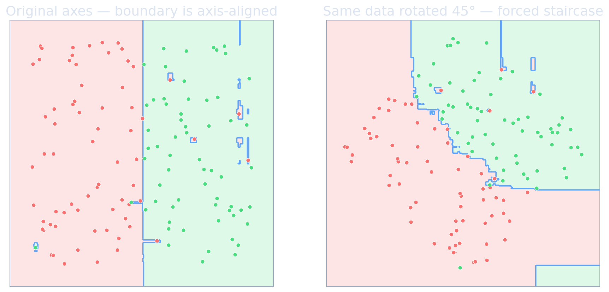
A tree splits along the axes of the table. A boundary that is diagonal in the feature space needs many steps.
Out-of-bag error and regression trees
Out-of-bag (OOB)
- a bootstrap sample omits a row with probability \((1-1/N)^N\to e^{-1}\approx 37\,\%\)
- predict each row with the trees that did not see it
- a validation score without a second data set
- grouped data: OOB rows share the image with training rows → optimistic, like a random split
Regression trees
- impurity = variance of \(y\) in the node
- a leaf predicts the mean of its rows
- the split minimises the sum of squared errors
- other losses: absolute error (median leaf), Poisson deviance (counts)
- the prediction is piecewise constant: no extrapolation
When the column finder fails
| Failure | Sign | Cure |
|---|---|---|
| threshold too low | maxima in the vacuum and in amorphous regions | raise the threshold; classify the candidates (today) |
| σ too large | close columns merge (dumbbells) | smaller σ; fit two Gaussians |
| σ too small | several maxima for one column at low dose | larger σ; a minimum distance |
| image border | cut neighbourhoods, wrong descriptors | discard a margin of one neighbour distance |
| scan distortion, drift | distances change along the slow scan axis | average fast frames; correct the drift first |
| thickness gradient | intensities change across the image | local normalisation (I_rel) |
Checklist: explaining a tabular EM model
- State the claim and the group (image, session, specimen).
- Report the baseline ladder on identical grouped folds.
- Add a noise column. Compute permutation importance on held-out groups.
- Cluster correlated descriptors. Permute or drop the groups.
- Use SHAP for single cases. State the background data and the model output (probability or log-odds).
- Check the sign of each main effect against physics.
- Look at the wrong predictions on the image.
- Do not claim a cause.
References

©Philipp Pelz - FAU Erlangen-Nürnberg - Data Science for Electron Microscopy